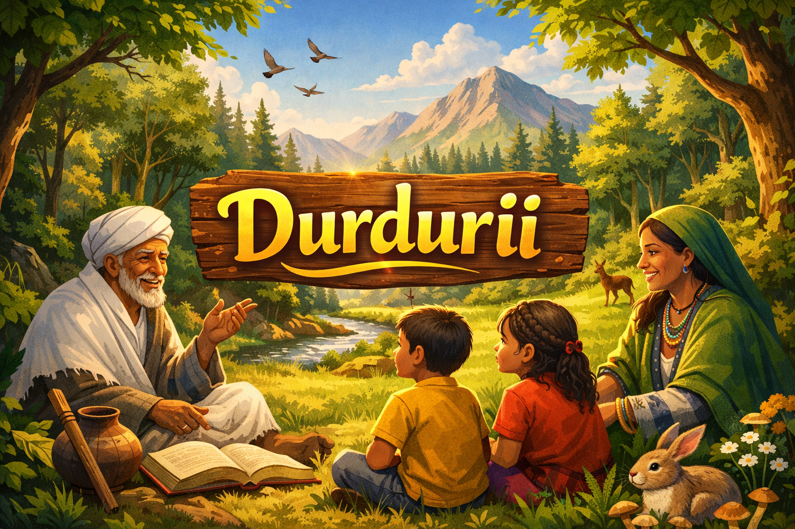
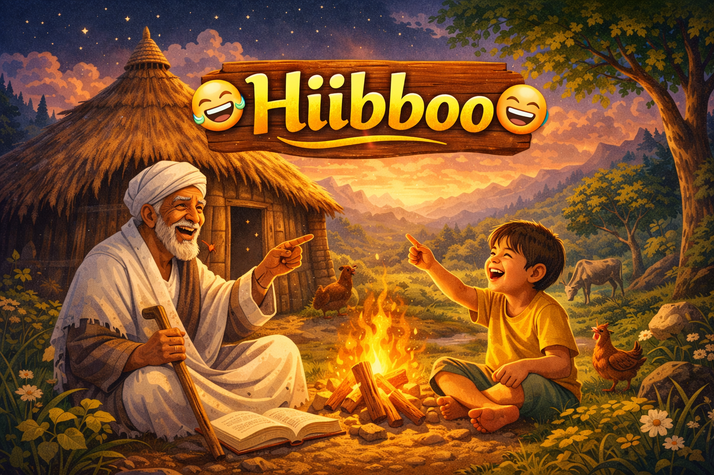
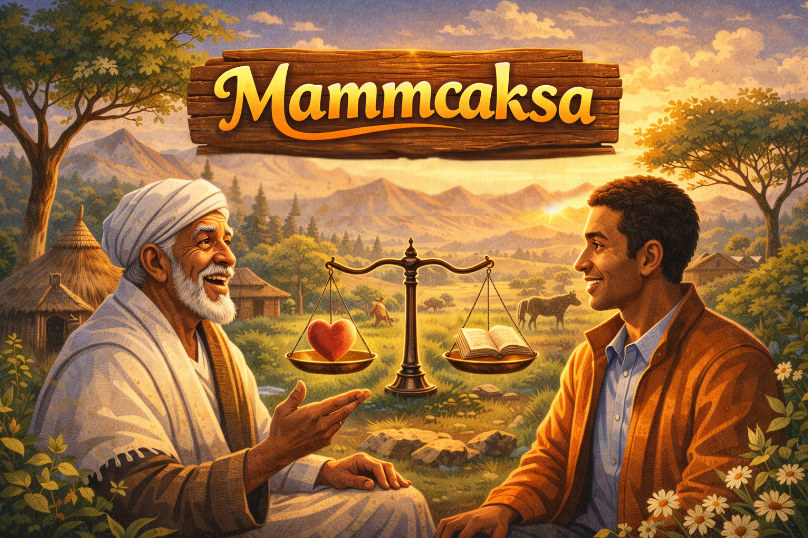
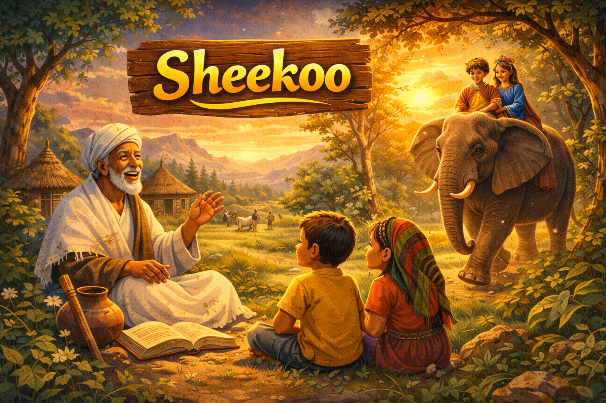
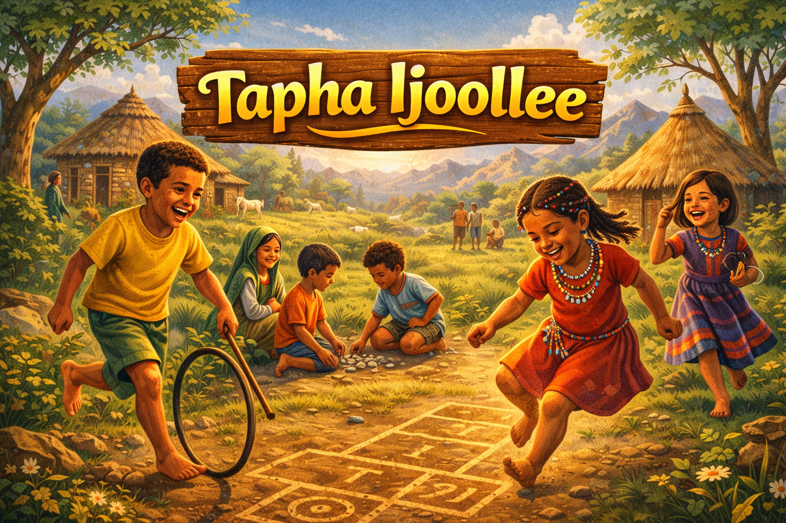

Durduriin gosa afoolaa keessaa tokko ta’ee seenaa gabaabaa bifa bashannansiisaa fi barsiisaa ta’een himamuudha. Yeroo baay’ee jaarsoliin, maanguddoonni yookaan maatiin ijoollee isaanii barsiisuuf durdurii fayyadamu. Durduriin seenaa fakkeenya qabuun namootaaf barnoota jireenyaa, safuu fi ogummaa akka hubatan gargaara. Akkasumas bashannana uumuun ijoollee fi dargaggoota yaada gaarii akka baratan taasisa. Kanaafuu durduriin aadaa Oromoo keessatti qabeenya guddaa kan ta’ee fi dhaloota irraa dhalootatti darbuudha.

Baacoon gosa afoolaa Oromoo keessaa tokko ta’ee gaaffii fi deebii bifa bashannansiisaa fi yaada kakaasu ta’een dhiyaatuudha. Yeroo baay’ee ijoollee, dargaggootaa fi maatii gidduutti bashannanaaf itti fayyadamu. Namni tokko gaaffii baacoo dhiyeessa; kan biraan immoo yaaduun deebii sirrii argachuu yaala. Baacoon namoota yaaduu, hubachuu fi ogummaa isaanii guddisuuf gargaara. Akkasumas walitti dhufeenya namootaa cimsuun bashannana uuma. Kanaafuu baacoon aadaa Oromoo keessatti qabeenya guddaa kan ta’ee fi dhaloota irraa dhalootatti darbuudha.

Mammaaksi gosa afoolaa ta’ee yaada ykn dubbii dheeraa hima gabaabaan mala kurfeessanii teessisaniidha. Yeroo baay’ee iddoo jaarsoliin Oromoo dubbii dubbatanitti mammaaksi iddoo guddaa qaba. Haasawa tokko keessatti jechoota muraasaan yaada dheeraa gadi fageenya qabu ibsuuf fakkii dubbii sanii yaada bal’aa fi dheeraa ta’e gabaabsanii walitti qabuu fi nama biraatiif dabarsuuf mammaaksi iddoo guddaa qaba.
Hibboon akaakuu afoolaa ta’ee mala gaaffii fi deebiitiin dhiyaata. Yeroo baay’ee hibboon maatiiwwan warra tokkoo walitti qabamanii bakka jiranitti galgala ykn yeroo boqonnaa namootni hedduu walgahan ykn waarii kan dubbatamu ykn taphatamu waan ta’eef gamtaadhaan haala hoo’aan hordofama.Hirmaannaa cimaatu keessatti godhama.

Sheekoon gosa afoolaa keessaa tokko ta’ee seenaa dheeraa bifa bashannansiisaa fi barsiisaa ta’een himamuudha. Yeroo baay’ee jaarsoliin, maanguddoonni yookaan maatiin ijoollee fi dargaggootaaf yeroo boqonnaa isaanii keessatti sheekoo himu. Sheekoon seenaa namoota, bineensotaa yookaan wantoota adda addaa of keessatti qabatee barnoota jireenyaa, safuu fi ogummaa namootaaf dabarsa. Akkasumas yaada nama bashannansiisuun, ijoollee fi dargaggoota akka yaadan fi baratan gargaara. Kanaaf sheekoon aadaa Oromoo keessatti qabeenya guddaa kan ta’ee fi dhaloota irraa dhalootatti darbuudha.

Taphni ijoolleen gosa afoolaa keessaa tokko ta’ee bashannana, leenjii fi wal-qunnamtii ijoollee keessatti iddoo guddaa qaba. Ijoolleen yeroo walitti dhufan taphachuun yeroo isaanii gammachuudhaan dabarsu. Tapha ijoollee keessatti ijoolleen ogummaa adda addaa kan akka waliif tumsuu, of irratti amanuu, yaaduu fi saffisaan murteessuu baratu. Akkasumas qaama isaanii sochoosuun fayyaa isaanii eeguuf isaan gargaara. Kanaaf tapha ijoollee aadaa Oromoo keessatti meeshaa bashannanaa qofa osoo hin taane, karaa ijoolleen itti guddatan, baratan fi walitti dhiyaatan ta’ee tajaajila.